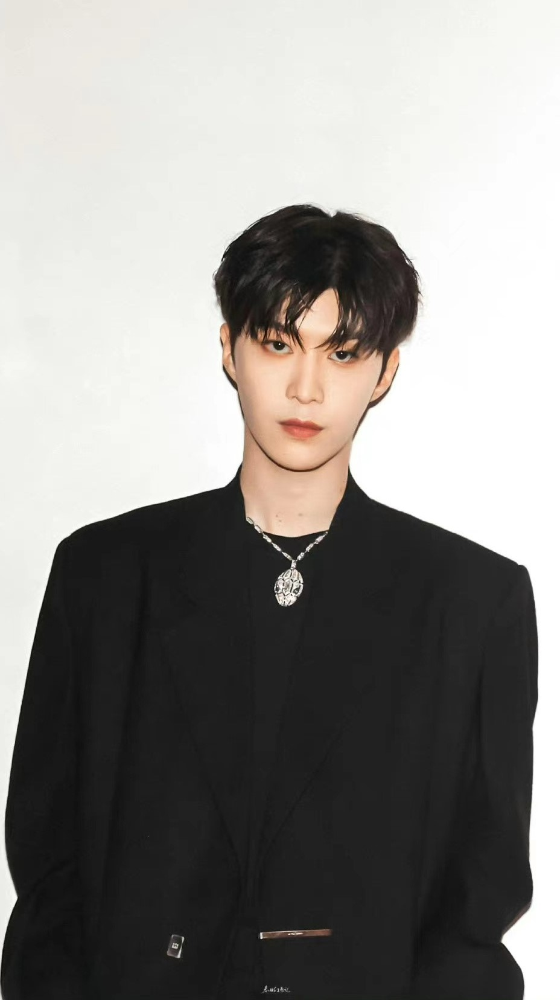

人物评价

范丞丞
范丞丞不仅外形亮眼、气质出众，且青春洋溢、活力十足， 他在《偶像练习生》节目中担任主唱的表现让人感到意外，不仅演唱出色，音乐也有自己的特色。 （新浪娱乐、李荣浩评）范丞丞阳光清爽，其帅帅的样子吸引了众多粉丝，而在《时尚芭莎》的一组写真中， 他则青春灵动、率性自由，在镜头前展现出不一样的自己。（网易娱乐、新浪娱乐评）
一向低调内敛、有时又呆萌可爱的范丞丞在《Vogue Me》杂志的一组写真中展现出了冷峻成熟的绅士气质， 并透出了迷离眼神。（电影网评）而范丞丞自参加《偶像练习生》后，他的表现可圈可点，舞台上帅气高冷， 舞台下则是可爱呆萌的行走表情包，且风格百变，能够轻松驾驭各种风格。（国际在线评）
七个小时，没有吵闹，累了一点，真值得。
如果你还想了解更多有关某明星的信息，请访问 范丞丞的网站。